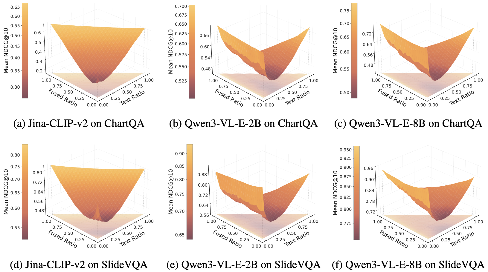
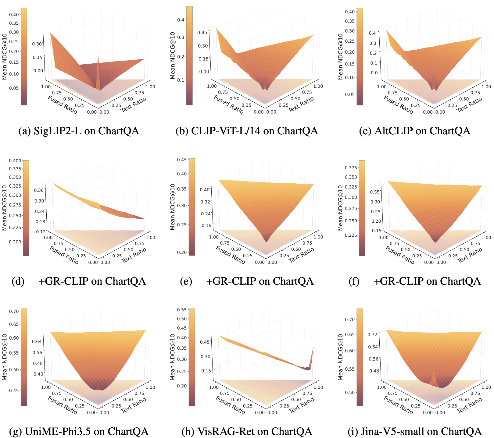
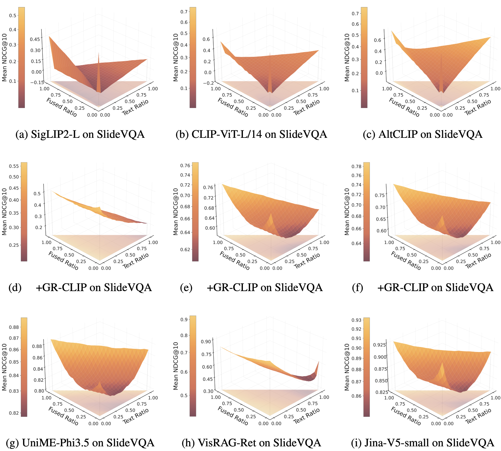
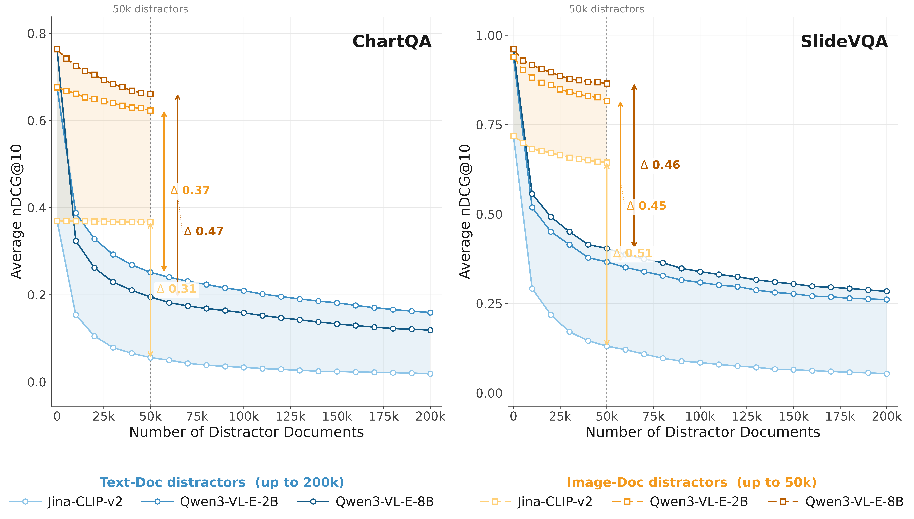
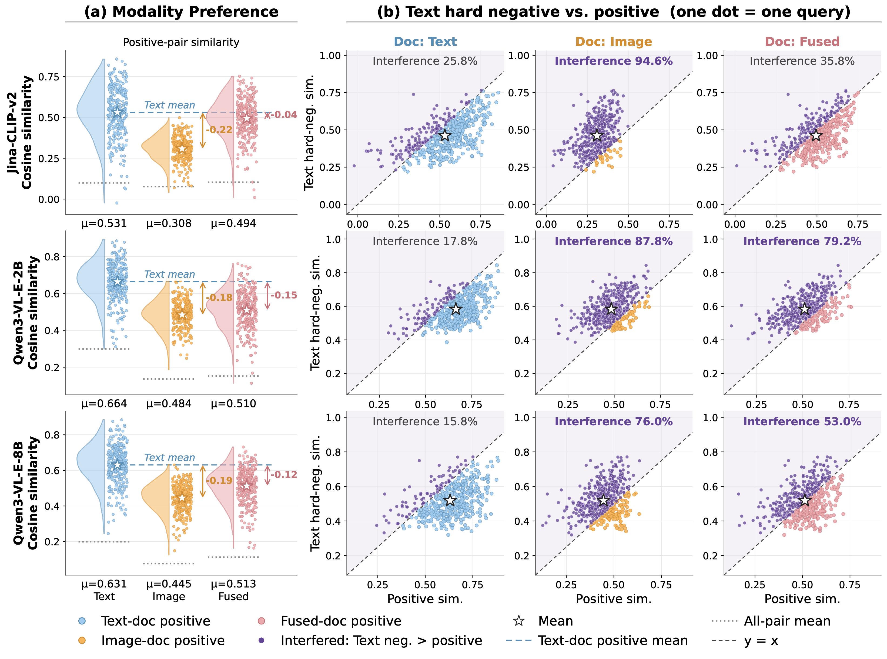
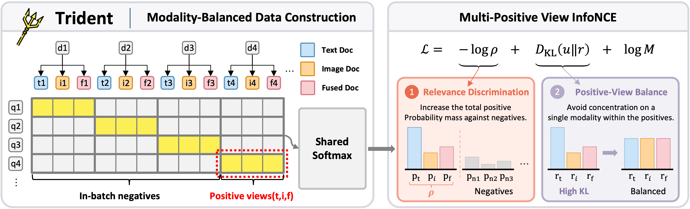
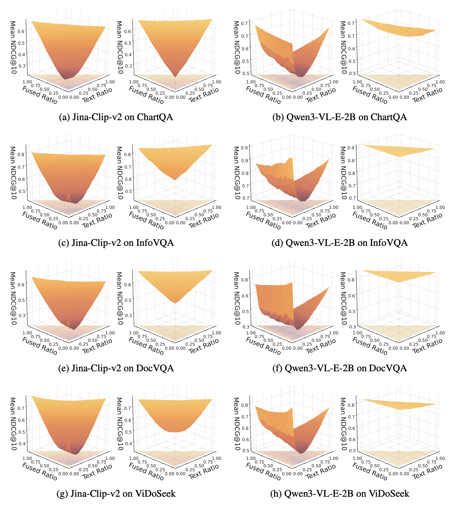
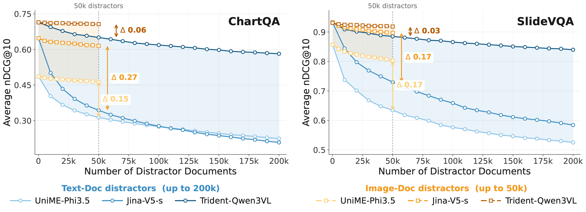
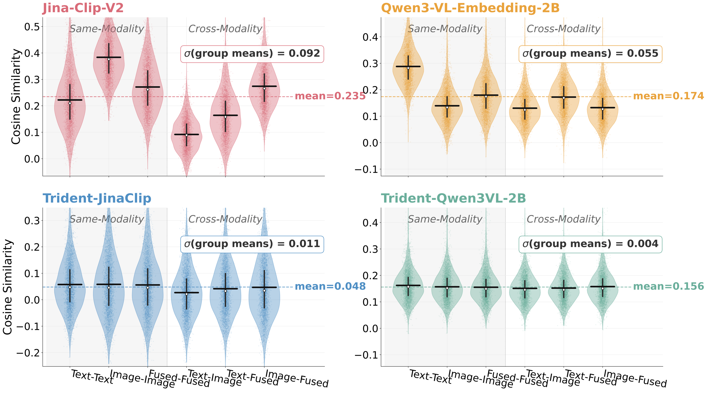

01
Mixing modalities breaks retrieval
Across 9 CLIP- and VLM-based retrievers, NDCG@10 is strong on single-modality corpora but drops sharply — up to −29 pts — once text and image documents coexist.
0.94→0.65image-only → mixed corpus
Multimodal retrievers work well on pure-image or pure-text corpora — but real corpora mix both. We show that when modalities coexist, retrieval quality collapses along a V-shaped curve, because models systematically over-score text: an irrelevant passage routinely outranks the relevant chart or slide. We call this Chaos in the Text, trace it to a modality preference inside the model, and remove it with Trident, a tri-view contrastive objective.
Across 9 CLIP- and VLM-based retrievers, NDCG@10 is strong on single-modality corpora but drops sharply — up to −29 pts — once text and image documents coexist.
For the same document, the text version scores far higher than the image version. An irrelevant text document beats the relevant image for up to 100% of queries.
Training with text / image / fused views as co-equal positives in one shared softmax flattens the V, closes the similarity gap, and improves single-modality scores too.
We take an image corpus (ChartQA, SlideVQA) and, for each document, build three semantically matched views with Qwen3-VL-235B: a Text view (detailed description), an Image view (original), and a Fused view (image + short summary). Sampling one view per document at controlled ratios keeps the content fixed and changes only the modality composition.



Is the drop simply because the candidate pool got bigger? We add equal numbers of irrelevant Wikipedia text passages or images to the original image corpus.
Irrelevant images barely hurt. Irrelevant text causes a sharp collapse — at 50k distractors the gap reaches Δ 0.31–0.51 NDCG@10 across models. Pool size alone cannot explain this: modality is steering the ranking.

We score the same queries against three semantically identical corpora (pure text, pure image, fused). If ranking depended only on relevance, the positive-pair similarity should not depend on the modality. It does — strongly.
For every model, text positives get the highest similarity, image positives the lowest, fused in between — e.g. SigLIP2-L: 0.777 (text) vs 0.141 (image) for the same content.
Plotting each query's positive score against its strongest irrelevant text, most image-positive queries lie above y = x: the irrelevant text wins. Fused views help, but only partially.

Points above the diagonal = queries where an irrelevant text document outranks the relevant one. More models in Appendix Figs. 11–12.

For each image document, Qwen3-VL-235B writes a detailed description (Text) and a short summary paired with the image (Fused). With the original Image, a single-positive pair becomes a three-view pair.
A separately normalised loss is invariant to adding a modality-wide offset c_m(q) — it learns rankings within a modality but never fixes the score baselines across modalities.
Put all three positives and all negatives in one softmax denominator, and average their log-probabilities:
which decomposes exactly into
ρ = total probability on positives; r = each view's share within the positives; u = uniform (1/3 each). The first term separates relevant from irrelevant; the second stops any single modality — usually text — from monopolising the positive mass.

Under the same distractor protocol as the phenomenon study, Trident-Qwen3VL-2B keeps its text- and image-distractor curves close together: the gap shrinks to Δ 0.06 on ChartQA and Δ 0.03 on SlideVQA, versus 0.15–0.27 for strong VLM baselines.


Before training, same-modality vs cross-modality positive pairs have very different centres (Jina-CLIP-v2 favours Image–Image, Qwen3-VL favours Text–Text). After Trident, the six group means align.
σ of the six group means (lower = less modality-dependent).
@article{sun2026chaos,
title={Chaos in the Text: Revealing the Modality Preference in Mixed-Modality Retrievers},
author={Sun, Yubo and Peng, Chunyi and Yan, Yukun and Liu, Zhenghao and Xu, Zhipeng and Mei, Sen and Xin, Linlin and Zeng, Zheni and Sun, Maosong},
journal={arXiv preprint arXiv:2610.11816},
year={2026}
}